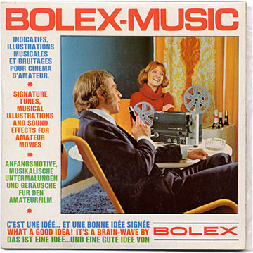
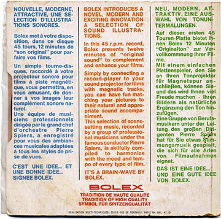
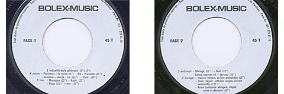

Bolex Music
October 27, 2006 -- Michael Tisdale
Whatever a "Brain-Wave" is, it's on this Bolex 45 (or 7" vinyl, as they call
them these days). It contains 12 minutes of original music and sound effects
used to add to any home movie; just plug in your record player to a sound
projector and press record.

It was recorded in France, and conducted by Pierre Spiers. The projector pictured on the front of the sleeve is a Bolex SP-8 - a super 8 sound projector manufactured in 1971 by Eumig for Bolex International.

The first side of this record consists of short musical tunes ranging from 7 to 35 seconds in length. There are two generic tunes, four seasonal tunes (Spring, Summer, Autumn and Winter), and four "place" tunes (mountains, forest, beach and sea).

The second side contains six tracks of sound effects and music, and are a bit longer in length. There are three ambient musical tracks; marriage, Christmas and nursery (titled "enfant nouveau né", or "newborn child".)
The last three are sound effects: car (departure and arrival); train (departure, interior coach, arrival); and plane (air terminal ambient sounds, jet departure).